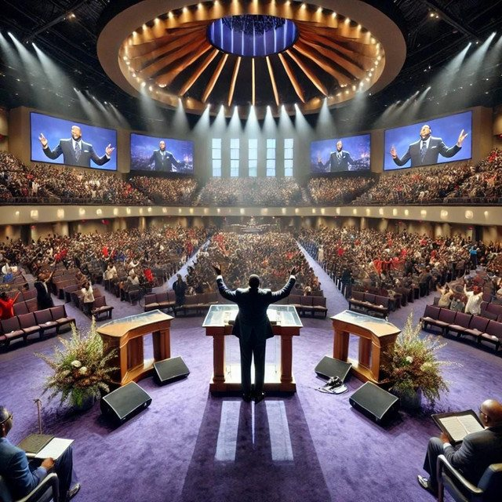

The Eclectic Polymath Podcast · Archive
#032: The Billion Dollar Pulpit: Megachurches, Money, and Accountability

About this episode
The American megachurch is part sanctuary, part media company, part live event, part corporate institution, and part spiritual machine.
This episode traces how large Protestant churches evolved from radio and television ministries into multisite networks built around celebrity pastors, worship music, digital branding, and massive weekly attendance.
We look at the economic structure behind these institutions, from tax exemptions and donor giving to limited financial reporting requirements, centralized leadership, and the blurred line between ministry, business, and personal empire.
Key points
- The American megachurch is part sanctuary, part media company, part live event, part corporate institution, and part spiritual machine.
- This episode traces how large Protestant churches evolved from radio and television ministries into multisite networks built around celebrity pastors, worship music, digital branding, and massive weekly attendance.
- We look at the economic structure behind these institutions, from tax exemptions and donor giving to limited financial reporting requirements, centralized leadership, and the blurred line between ministry, business, and personal empire.